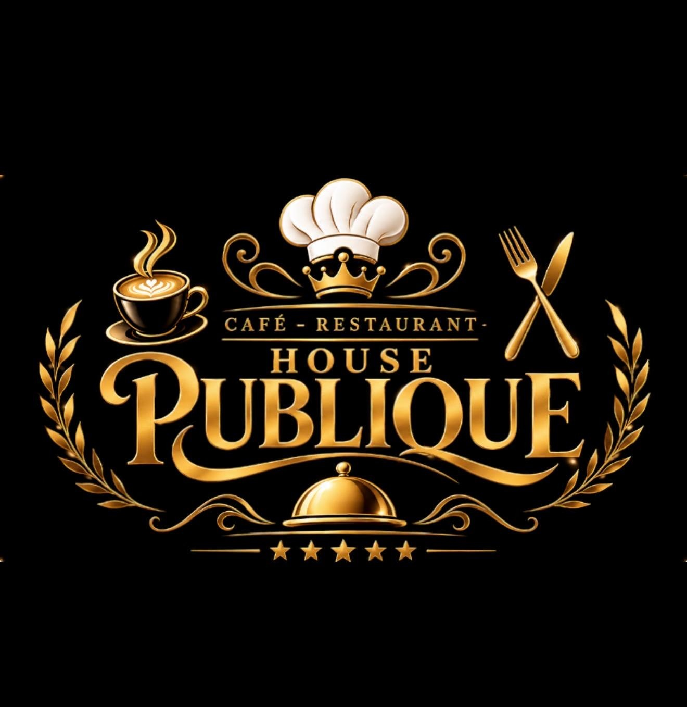
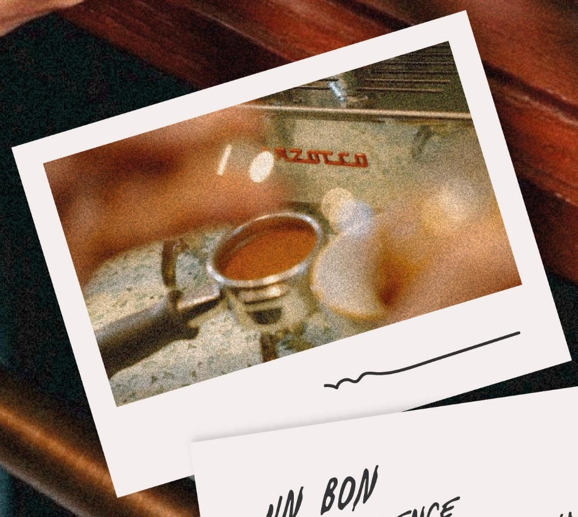
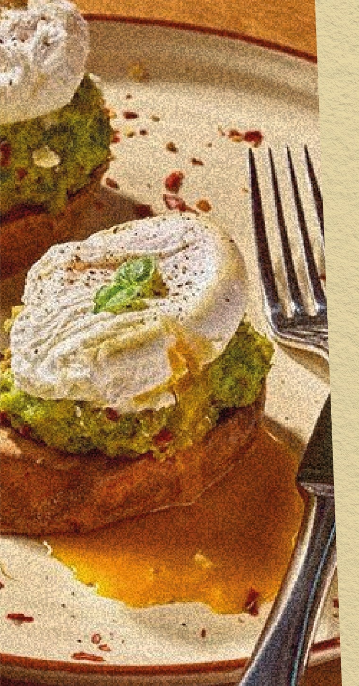

Française
35 DHAssortiment de 3 mini viennoiseries, Nutella, confiture, boisson chaude au choix, jus maison, eau minérale.

Café & Restaurant
Café — Restaurant

Espresso & cafés de terroir
« Un bon matin commence par une touche gourmande. Savourez chaque instant ! »

L'art du petit déjeuner
Chaque formule est généreusement servie avec une boisson chaude au choix, un jus frais maison et de l'eau minérale pour bien commencer la journée.
Assortiment de 3 mini viennoiseries, Nutella, confiture, boisson chaude au choix, jus maison, eau minérale.
Harcha, baghrir, rghayef, miel, amlou, beurre, fromage traditionnel, huile d'olive, olive, boisson chaude, eau minérale, jus de maison.
Deux oeufs au choix, assortiment de charcuterie, mortadelle, la vache qui rit, fromage traditionnel, huile d'olive, olive, boisson chaude, eau minérale, jus de maison.
Deux oeufs au choix, khlie, olive, huile d'olive, boisson chaude, eau minérale, jus de maison.
Pain céréales grillé, tomate, épices, fromage manchego, tapenade, thon, avocat, huile d'olive, olive, jus maison, eau minérale.
Bol de yaourt fait maison, fruits de saison, fruits, pain grillé, tapenade, fromage traditionnel, mini detox.
Deux oeufs au choix, saucisse grillée, haricots rouges, tomate, champignons, dinde fumée, fromage edam, eau minérale, jus maison, huile d'olive, olive.
Pain céréales grillé, assortiment de charcuterie, oeufs à la coque, fromage traditionnel, Kiri, beurre, confiture, bol de yaourt, fruits de saison, huile d'olive, olive, eau minérale, jus de maison.
Toast céréales au fromage, pancakes, 2 assortiments de viennoiseries, assortiment de pain, omelette nature, pain perdu nature, bol de yaourt, fruits de saison, fruits, huile d'olive, olive, eau minérale, jus de maison ou mini detox.
Moments partagés en famille ou entre amis